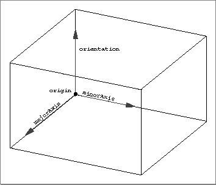
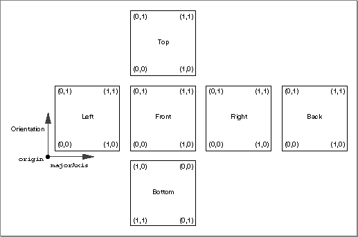

Boxes
A box is a three-dimensional object defined by an origin (that is, a corner of the box) and three vectors that define the edges of the box that meet in that corner. A box defined by three mutually orthogonal vectors is a regular rectangular prism. A box defined by nonorthogonal vectors is a general parallelepiped.The entire box can have a set of attributes. In addition, you may specify an array of attributes to be applied to each face of the box. (In this way, for example, you can give each face of the box a different color.)
A box is defined by the
TQ3BoxDatadata type. See "Creating and Editing Boxes," beginning on page 4-95 for a description of the routines you can use to create and edit boxes. Figure 4-15 shows a box.
Figure 4-16 on page 4-46 shows the standard surface parameterization of a box.Figure 4-16 The standard surface parameterization of a box

typedef struct TQ3BoxData { TQ3Point3D origin; TQ3Vector3D orientation; TQ3Vector3D majorAxis; TQ3Vector3D minorAxis; TQ3AttributeSet *faceAttributeSet; TQ3AttributeSet boxAttributeSet; } TQ3BoxData;
Field Description
origin- The origin of the box.
orientation- The orientation of the box.
majorAxis- The major axis of the box.
minorAxis- The minor axis of the box.
faceAttributeSet- A pointer to a six-element array of face attributes. The attributes apply to the faces of the box specified in the following order: left, right, front, back, top, bottom.
boxAttributeSet- A set of attributes for the box. The value in this field is
NULLif no box attributes are defined.